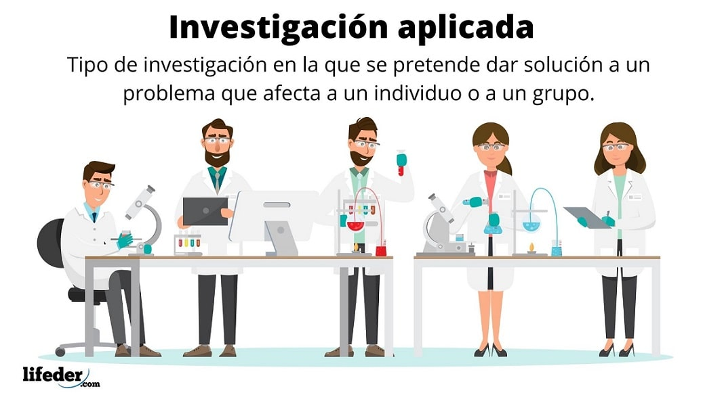

¿Qué es la Investigación Descriptiva?
La investigación descriptiva es un enfoque de investigación que se utiliza para describir y caracterizar un fenómeno o situación tal como se presenta en la realidad, sin intentar establecer relaciones causales o explicar los motivos detrás de dicho fenómeno. El objetivo principal de la investigación descriptiva es proporcionar una representación precisa y detallada de las características, propiedades y comportamientos de un fenómeno específico.
La investigación descriptiva se basa en la recopilación sistemática de datos para describir las variables relevantes del fenómeno en estudio. Algunas características clave de la investigación descriptiva incluyen:
- Observación y medición: La investigación descriptiva implica la observación y medición de variables específicas relacionadas con el fenómeno estudiado. Los datos se recopilan mediante técnicas como encuestas, cuestionarios, observaciones directas o análisis de registros existentes.
- Muestra representativa: Para obtener resultados representativos, se selecciona una muestra adecuada que refleje la población o el grupo de interés. La muestra debe ser lo suficientemente grande como para proporcionar una representación precisa de las características del fenómeno.
- Análisis de datos descriptivos: Los datos recopilados se analizan utilizando técnicas estadísticas descriptivas, como medidas de tendencia central, distribución de frecuencias, gráficos y tablas. Estas técnicas permiten resumir y presentar los datos de manera clara y comprensible.
- No se establecen relaciones causales: A diferencia de otros enfoques de investigación, la investigación descriptiva no busca establecer relaciones causales entre variables. Se centra únicamente en describir y caracterizar el fenómeno sin profundizar en las causas o relaciones subyacentes.
- Contexto natural: La investigación descriptiva se lleva a cabo en el contexto natural en el que ocurre el fenómeno estudiado. Esto permite capturar las características y comportamientos del fenómeno en su entorno real, proporcionando una visión más auténtica y contextualizada.
¿Para que sirve la Investigación Descriptiva?
La investigación descriptiva tiene como objetivo principal proporcionar una descripción detallada y precisa de los fenómenos estudiados. Sus utilidades van desde la descripción de fenómenos desconocidos hasta la identificación de pautas y tendencias, apoyo en la toma de decisiones, generación de hipótesis y diseño de estudios posteriores, y validación de instrumentos de medición.
